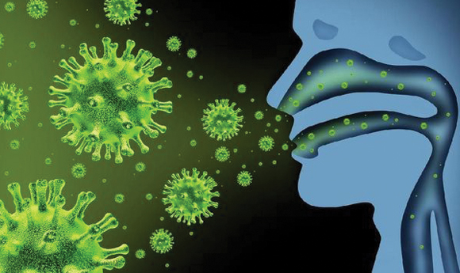
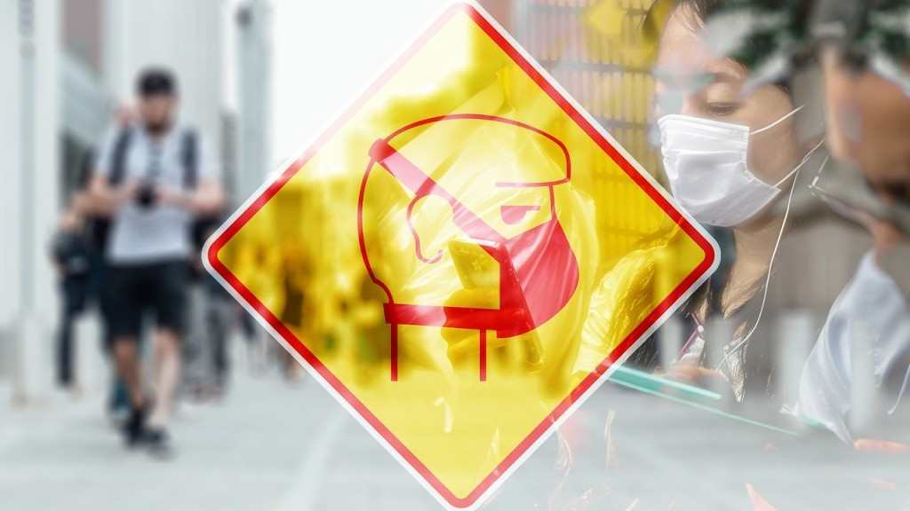

Virus Corona (Covid19)
Virus Corona atau severe acute respiratory syndrome coronavirus 2 (SARS-CoV-2) adalah virus yang menyerang sistem pernapasan. Penyakit karena infeksi virus ini disebut COVID-19. Virus Corona bisa menyebabkan gangguan pada sistem pernapasan, pneumonia akut, sampai kematian.
Severe acute respiratory syndrome coronavirus 2 (SARS-CoV-2) yang lebih dikenal dengan nama virus Corona adalah jenis baru dari coronavirus yang menular ke manusia. Virus ini bisa menyerang siapa saja, baik bayi, anak-anak, orang dewasa, lansia, ibu hamil, maupun ibu menyusui.
Infeksi virus ini disebut COVID-19 dan pertama kali ditemukan di kota Wuhan, Cina, pada akhir Desember 2019. Virus ini menular dengan cepat dan telah menyebar ke wilayah lain di Cina dan ke beberapa negara, termasuk Indonesia. Hal ini membuat beberapa negara di luar negeri menerapkan kebijakan untuk memberlakukan lockdown dalam rangka mencegah penyebaran virus Corona.
Coronavirus adalah kumpulan virus yang bisa menginfeksi sistem pernapasan. Pada banyak kasus, virus ini hanya menyebabkan infeksi pernapasan ringan, seperti flu. Namun, virus ini juga bisa menyebabkan infeksi pernapasan berat, seperti infeksi paru-paru (pneumonia), Middle-East Respiratory Syndrome (MERS), dan Severe Acute Respiratory Syndrome (SARS).
Penyebaran Virus Corona (Covid19)

Infeksi virus Corona atau COVID-19 disebabkan oleh coronavirus, yaitu kelompok virus yang menginfeksi sistem pernapasan. Pada sebagian besar kasus, coronavirus hanya menyebabkan infeksi pernapasan ringan sampai sedang, seperti flu. Akan tetapi, virus ini juga bisa menyebabkan infeksi pernapasan berat, seperti pneumonia, Middle-East Respiratory Syndrome (MERS), dan Severe Acute Respiratory Syndrome (SARS).
Ada dugaan bahwa virus Corona awalnya ditularkan dari hewan ke manusia. Namun, kemudian diketahui bahwa virus Corona juga menular dari manusia ke manusia.
Seseorang dapat tertular COVID-19 melalui berbagai cara, yaitu:
- Tidak sengaja menghirup percikan ludah (droplet) yang keluar saat penderita COVID-19 batuk atau bersin
- Memegang mulut atau hidung tanpa mencuci tangan terlebih dulu setelah menyentuh benda yang terkena cipratan ludah penderita COVID-19
- Kontak jarak dekat dengan penderita COVID-19, misalnya bersentuhan atau berjabat tangan
Diagnosis Virus Corona (COVID-19)
Untuk menentukan apakah pasien terinfeksi virus Corona, dokter akan menanyakan gejala yang dialami pasien. Dokter juga akan bertanya apakah pasien bepergian atau tinggal di daerah yang memiliki kasus infeksi virus Corona sebelum gejala muncul.
- Rapid test sebagai penyaring
- Tes usap tenggorokan untuk meneliti sampel dahak (tes PCR)
- Rontgen dada untuk mendeteksi infiltrat atau cairan di paru-paru
Pengobatan Virus Corona (COVID-19)
Infeksi virus Corona atau COVID-19 belum bisa diobati, tetapi ada beberapa langkah yang dapat dilakukan dokter untuk meredakan gejalanya dan mencegah penyebaran virus, yaitu:
- Merujuk penderita COVID-19 untuk menjalani perawatan dan karatina di rumah sakit yang ditunjuk
- Memberikan obat pereda demam dan nyeri yang aman dan sesuai kondisi penderita
- Menganjurkan penderita COVID-19 untuk melakukan isolasi mandiri dan istirahat yang cukup
- Menganjurkan penderita COVID-19 untuk banyak minum air putih untuk menjaga kadar cairan tubuh
Pencegahan Virus Corona (Covid19)

Sampai saat ini, belum ada vaksin untuk mencegah infeksi virus Corona atau COVID-19. Oleh sebab itu, cara pencegahan yang terbaik adalah dengan menghindari faktor-faktor yang bisa menyebabkan Anda terinfeksi virus ini, yaitu:
- Terapkan physical distancing, yaitu menjaga jarak minimal 1 meter dari orang lain, dan jangan dulu ke luar rumah kecuali ada keperluan mendesak.
- Gunakan masker saat beraktivitas di tempat umum atau keramaian.
- Rutin mencuci tangan dengan air dan sabun atau hand sanitizer yang mengandung alkohol minimal 60% setelah beraktivitas di luar rumah atau di tempat umum.
- Tingkatkan daya tahan tubuh dengan pola hidup sehat.
- Jangan menyentuh mata, mulut, dan hidung sebelum mencuci tangan.
- Hindari kontak dengan penderita atau orang yang dicurigai menderita COVID-19.
- Tutup mulut dan hidung dengan tisu saat batuk atau bersin, kemudian buang tisu ke tempat sampah.
- Hindari berdekatan dengan orang yang sedang sakit demam, batuk, atau pilek.
- Jaga kebersihan benda yang sering disentuh dan kebersihan lingkungan, termasuk kebersihan rumah.
Untuk orang yang diduga terkena COVID-19 atau termasuk kategori ODP (orang dalam pemantauan) maupun PDP (pasien dalam pengawasan), ada beberapa langkah yang bisa dilakukan agar virus Corona tidak menular ke orang lain, yaitu:
- Jangan keluar rumah, kecuali untuk mendapatkan pengobatan.
- Bila ingin ke rumah sakit saat gejala bertambah berat, sebaiknya hubungi dulu pihak rumah sakit untuk menjemput.
- Lakukan isolasi mandiri dengan cara tinggal terpisah dari orang lain untuk sementara waktu. Bila tidak memungkinkan, gunakan kamar tidur dan kamar mandi yang berbeda dengan yang digunakan orang lain.
- Larang dan cegah orang lain untuk mengunjungi atau menjenguk Anda sampai Anda benar-benar sembuh.
- Sebisa mungkin jangan melakukan pertemuan dengan orang yang sedang sedang sakit.
- Hindari berbagi penggunaan alat makan dan minum, alat mandi, serta perlengkapan tidur dengan orang lain.
- Pakai masker dan sarung tangan bila sedang berada di tempat umum atau sedang bersama orang lain.
- Gunakan tisu untuk menutup mulut dan hidung bila batuk atau bersin, lalu segera buang tisu ke tempat sampah.